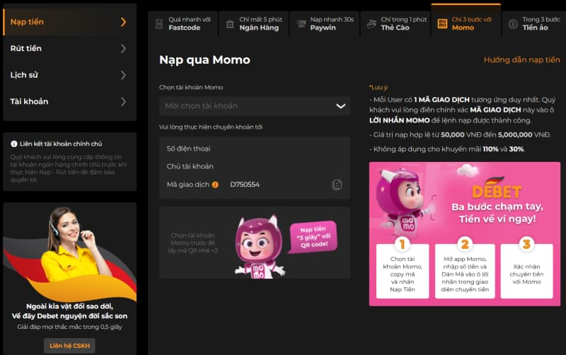
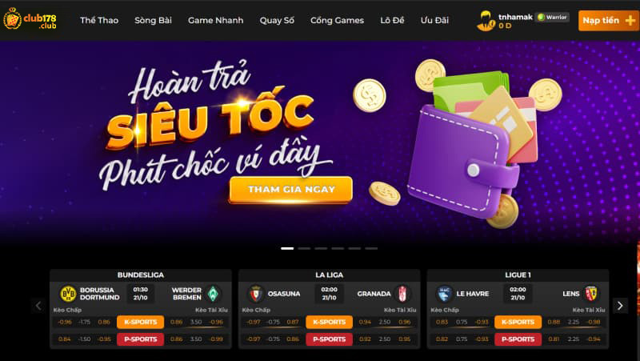

Hướng dẫn nạp tiền Club178 và giải đáp câu hỏi thường gặp
Hướng dẫn nạp tiền Club178 đơn giản và cam kết thực hiện minh bạch, an toàn cho người tham gia. Câu hỏi đặt ra liên quan đến hướng dẫn các bước trong nạp tiền tại nhà cái diễn ra như thế nào? Theo dõi và cùng cập nhật rõ hơn đối với từng thao tác.
Điểm danh và hướng dẫn các cách nạp tiền Club178
Nạp tiền là thao tác tiếp theo sau khi người tham gia đã đăng ký tài khoản tại nhà cái. Để cược thủ bắt đầu trải nghiệm tính năng hấp dẫn nhất, bạn cần nạp tiền vào tài khoản cá nhân. Vậy có những phương thức nào để thực hiện nạp tiền nhanh chóng và an toàn? Hãy tham khảo những chia sẻ dưới đây giúp bạn tìm thấy câu trả lời chuẩn nhất:
Tài khoản ngân hàng
Đầu tiên, người tham gia cần đăng nhập vào website và click vào mục “Nạp tiền”. Nếu bạn chưa có tài
khoản thì cần tiến hành đăng ký tài khoản trước tiên. Sau khi đăng ký thành công, giao diện ngay lập tức
tự động chuyển tới mục nạp tiền.
Nạp tiền Club178 qua ngân hàng nhanh gọn đã được đông đảo cược thủ lựa chọn. Bạn cần điền đầy đủ thông
tin
mà Club178 yêu cầu tại biểu mẫu đăng ký với các bước cụ thể như sau:
Bước 1: Chọn tên ngân hàng muốn nạp tiền, tên chủ tài khoản, số tài khoản, chi nhánh xử lý giao dịch,…
Bước 2: Lấy thông tin ngân hàng của Club178 để tiến hành chuyển tiền đến hệ thống. Bạn có thể tiến hành
chuyển tiền tại quầy giao dịch, ATM hoặc chuyển qua Internet banking.
Bước 3: Sau khi chuyển tiền thành công thì tiến hành thao tác điền thông tin vào lệnh nạp. Việc thực
hiện bước này nhằm mục đích xác nhận lại số tiền đã được chuyển về tài khoản Club178 bao gồm:
- Hình thức người dùng lựa chọn để chuyển tiền vào tài khoản
- Số tiền đã chuyển đi
- Họ và tên người thực hiện giao dịch
- Ghi chú lại hình ảnh giao dịch nạp tiền Club178 hoặc các thông tin quan trọng (nếu có).
Bước 4: Bấm chọn gói khuyến mãi thích hợp và xác nhận để hoàn tất yêu cầu.
Việc nạp tiền qua tài khoản đã hoàn thành, tiền sẽ lập tức chuyển về tài khoản nhanh nhất có thể. Nếu
sau 30 phút chưa nhận được tiền thì bạn có thể liên hệ với bộ phận CSKH của bạn để tư vấn thêm.
Paywin
Nội dung thao tác trong hướng dẫn nạp tiền Club178 bằng Paywin cụ thể bao gồm:
- Bước 1: Tương tự như hình thức đã đề cập ở trên thì người chơi trước tiên đều cần phải đăng nhập tài khoản. Bạn cần chú ý là phải truy cập chính xác link vào nhà cái chính thức. Như vậy sẽ giúp hạn chế việc vào truy cập nhầm nhà cái giả mạo và xảy ra việc lừa đảo.
- Bước 2: Người chơi click để bấm chọn vào ngân hàng mà người tham gia mong muốn nạp tiền Club178. Số tiền yêu cầu cần nhập chính xác sao cho trùng khớp với số tiền mà người chơi đã chuyển. Lưu ý hệ thống sẽ quy đổi từ 10.000.000 VNĐ nên chỉ cần điền 10.000. Lựa chọn gói khuyến mãi tham gia dựa vào nhu cầu cá nhân để xác nhận sau đó.
- Bước 3: Chuyển tiền qua Paywin yêu cầu phải nhập thông tin tài khoản ngân hàng của người chơi. Tiếp theo là nhập mã OTP để bấm chọn “Xác thực ngay”. Người chơi khi đã hoàn thành thao tác như hướng dẫn ở bước 2. Bạn cảm phiền có thể chờ đợi từ 1 – 2 phút để hệ thống Club178 cho phép nhân viên kiểm tra và xử lý. Người dùng còn có thể theo dõi giao dịch đang được xử lý tại chuyên mục Lịch sử giao dịch.
Fastcode
FastPay được đánh giá là một cách thức nạp tiền Club178 đơn giản chỉ cần một vài thao tác như sau:
- Bước 1: Đăng nhập vào website Club178, click chọn mục “Nạp tiền” và bấm chọn phương thức Fastcode.
- Bước 2: Điền những thông tin cá nhân về tài khoản ngân hàng, lưu ý là ngân hàng này phải có Internet banking.
- Bước 3: Nhập số tiền cần chuyển vào tài khoản và sau đó ấn vào ô “xác nhận”.
- Bước 4: Hệ thống sẽ tự động chuyển tiền qua ứng dụng ngân hàng đang liên kết. Bạn cần nhập chính xác tên người dùng và mật khẩu, bấm chọn “đăng ký” và tiếp tục điền mã OTP vừa mới nhận được.
- Bước 5: Sau khi hoàn thành giao dịch, tiền sẽ chuyển về tài khoản Club178 nhanh nhất có thể.
Nạp tiền Club178 với thẻ cào
KNạp tiền bằng thẻ cào cũng là một phương thức được nhiều người chơi yêu thích vì tính linh hoạt. Tuy nhiên, người dùng sẽ phải trả khoản phí nhỏ đối với hình thức nạp tiền này. Hướng dẫn các thao tác để người chơi có thể nạp tiền qua thẻ cào như sau:
- Bước 1: Đăng nhập vào tài khoản trực tiếp trên website của nhà cái Club178.
- Bước 2: Click chọn chuyên mục nạp tiền Club178 và bấm vào phương thức “Thẻ cào”
- Bước 3: Lựa chọn mệnh giá thẻ cào và nhập đúng với mã thẻ và số seri in trên tấm thẻ cào của bạn.
- Bước 4: Chọn nhà mạng cung cấp thẻ cào mà bạn đang dùng và nhấn chọn “nạp tiền” để kết thúc quá trình. Người dùng cần chờ một vài phút để hệ thống xác minh thông tin và chuyển tiền vào tài khoản sau đó. Những mức phí đối mà người dùng cần phải trả đối khi nạp tiền qua thẻ cào tương ứng với Viettel và Vina là 32%, Mobi là 34%.
Những lần nạp tiền qua thẻ cào đều được hệ thống ghi lại giao dịch nên bạn có thể theo dõi.

Ví MOMO
Quy trình tiến hành nạp tiền Club178 bằng ví Momo tương tự như các hình thức bên trên
Lý do nhiều cược thủ không nạp tiền Club178 thành công?
Bên cạnh những chia sẻ hướng dẫn đối với từng phương thức nạp tiền Club178 như trên. Việc người tham gia là người mới thường gặp những vấn đề nhất định trong giao dịch nạp tiền. Điển hình có thể kể đến là đã nhập thông tin đầy đủ nhưng vẫn không hoàn tất xử lý giao dịch. Cùng tìm hiểu lý do vì sao nhiều cược thủ nạp tiền Club178 không thành công:
Tối ưu xử lý đường truyền kém
Vấn đề liên quan đến đường truyền mạng kém trên nền tảng Internet thường xuyên xảy ra khi giao dịch tài chính. Kể cả việc người tham gia nếu mạng gặp sự cố, vấn đề vẫn không thể tải được. Điều này khiến cho giao dịch không thể chuyển về hệ thống website và xử lý. Đó là lý do vì sao Club178 luôn nhắc nhở người dùng đảm bảo đường truyền mạng tối ưu.
Nhập thông tin tại biểu mẫu không chuẩn xác
Một lý do khác khiến cho giao dịch nạp tiền Club178 gặp vấn đề là thông tin không chuẩn xác. Người tham gia cần chú ý đảm bảo tất cả thông tin về tài khoản ngân hàng, tài khoản game trùng với nhau. Trường hợp nếu có chi tiết nhỏ bị sai lệch thì vẫn có thể dẫn tới việc giao dịch không thể hoàn thành.
Website gặp vấn đề cần bảo trì
Một lý do khác đến từ nguyên nhân khách quan xuất phát từ việc hệ thống nạp tiền Club178 đang bảo trì. Tùy thời điểm nếu hệ thống bất ngờ bị lag, tốc độ load chậm thì nhà cái sẽ có kế hoạch bảo trì. Thông thường, hệ thống sẽ trực tiếp thông báo đến người tham gia từ trước. Tuy nhiên, nhiều người nếu không để ý vẫn có thể thực hiện giao dịch không thành công.
Tràn lan các nhà cái giả mạo chặn người dùng
Tình huống xấu nhất khi người chơi chuyển tiền vào tài khoản Club178 nhưng vẫn không nhận được tiền trong tài khoản. Tình huống này xấu nhất có thể người chơi đã truy cập tham gia trúng nhà cái lừa đảo. Một khi cược thủ đã chuyển tiền thì lập tức hệ thống nhà cái lừa đảo sẽ chặn lại và khóa tài khoản sau đó. Do đó, bạn cần cẩn thận và đề phòng các tình huống xấu có thể xảy ra bất ngờ.
Câu hỏi thường gặp
Cùng bài viết giải đáp thắc mắc cho những câu hỏi mà người chơi thường xuyên gửi về Club178 cụ thể:
Nạp tiền Club178 có bị mất tiền không?
Câu trả lời tất nhiên là không, số tiền trong tài khoản của bạn tại nhà cái sẽ được giữ nguyên. Cược thủ có thể thực hiện rút tiền về tài khoản ngân hàng cá nhân bất cứ thời điểm nào. Tuy nhiên, nhà cái hiện đã có quy định riêng đối với tài khoản của người tham gia. Đó là việc thành viên trong một tháng không truy cập tài khoản thì nhà cái sẽ tạm khóa tài khoản.
Không có tài khoản có thể cược không?
Cược thủ nếu không có tài khoản ngân hàng hoặc tài khoản không có tiền vẫn có thể tham gia. Cược thủ khi nạp tiền có quyền lựa chọn phương thức giao dịch phù hợp. Điển hình nhất có thể kể đến là nạp tiền trực tiếp qua ví điện tử MOMO Pay hoặc thẻ cào điện thoại.
Club178 lừa đảo chiếm tiền cược đúng hay sai?
Nhà cái được biết đến là đơn vị chuyên tổ chức cá cược cam kết hoạt động minh bạch và công bằng. Do đó
sẽ không bao giờ xảy ra vấn đề về lừa đảo và chiếm giữ tiền của người tham gia. Theo đó, thương hiệu nhà
cái này đã có nhiều năm kinh nghiệm và xây dựng uy tín trong ngành. Đó là lý do vì sao bạn có thể yên
tâm tuyệt đối khi tham gia cá cược.
Trên đây là tổng quan toàn bộ nội dung cập nhật mới nhất hướng dẫn thao tác nạp tiền Club178. Người chơi
có nhu cầu nạp tiền tại Club178 hãy tham khảo thao tác giao dịch ở trên. Đừng quên cập nhật thêm nhiều
nội
dung mới nhất bằng cách truy cập website https://club178.club/.